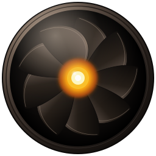
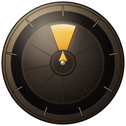
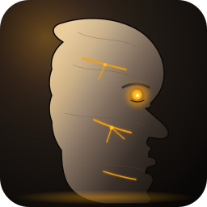
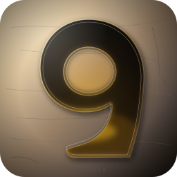

Each concept rendered at 16, 24, 32, 64, 128, 256 px on warm-stone (dark mode) and marble (light mode).
Camera iris with exactly nine blades. Sodium-amber light pours through the central opening. Encodes the Enneagram as geometry, not as a label. Reads as “controlled seeing” — a tool, not a logo.

16
Outer fixed ring with nine ticks; inner rotating dial with one amber-locked segment. The mechanism of “cracking the code” of a personality. Strong for the tech-spec dossier variant on /personality-analysis/*.

16Classical statue carved from warm stone, lit from one side, with sodium-amber light leaking from the eye and from hairline cracks. The locked brand mood as a face. More emotional than geometric.

16The numeral nine carved from warm stone with sodium-amber light bleeding through the cracks. The most direct path from wordmark to mark — instantly readable as the brand even at 16 px.

16